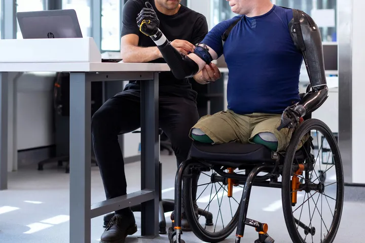
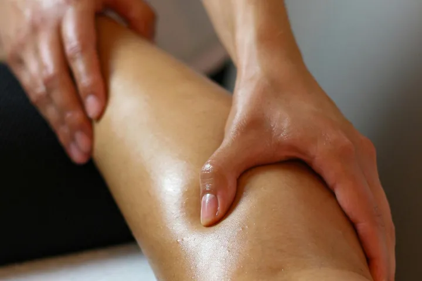
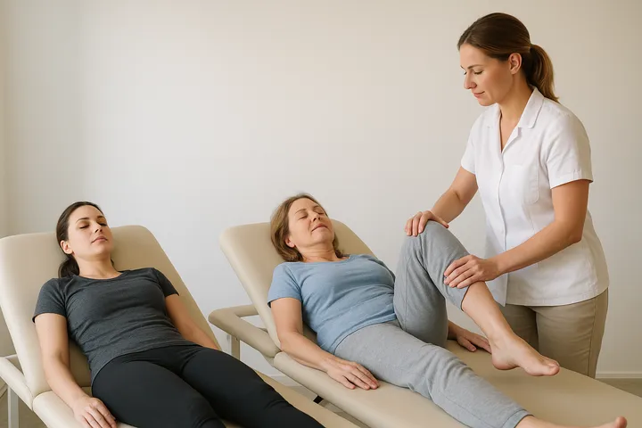
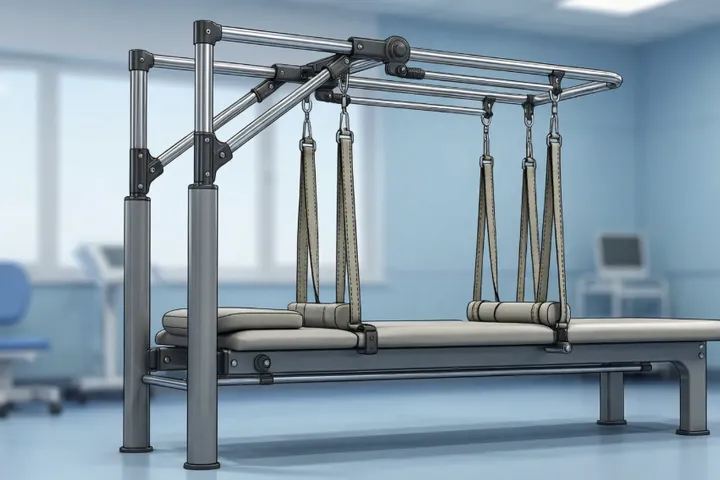
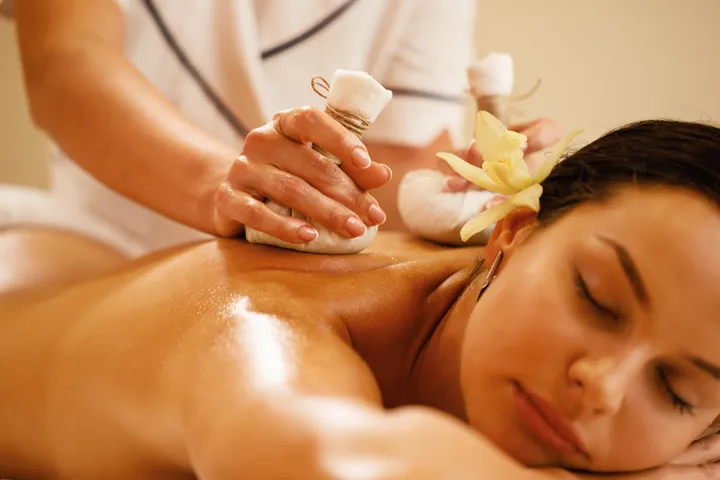
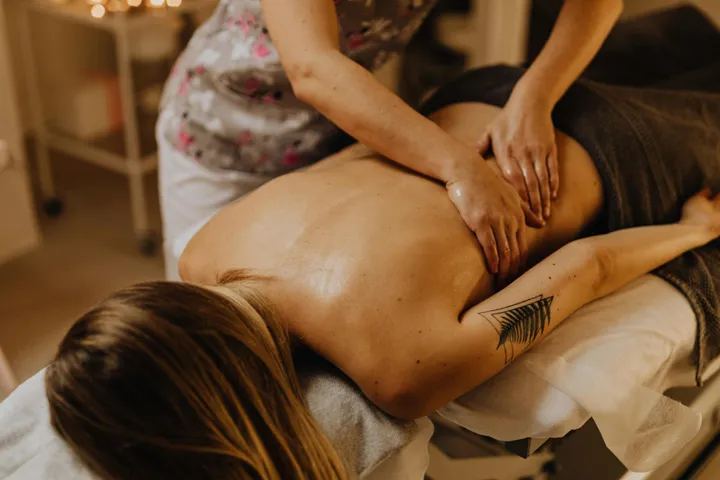
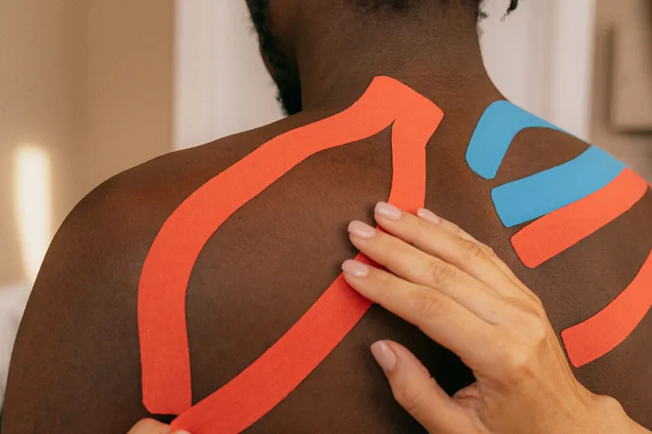
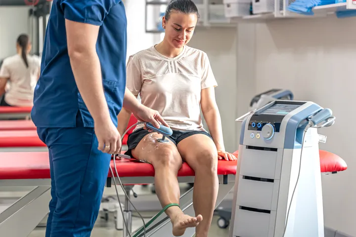
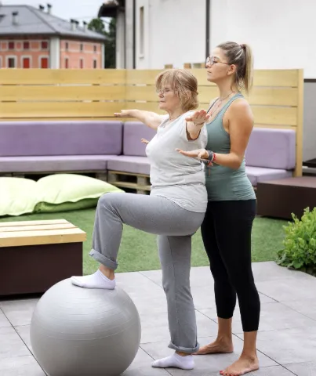
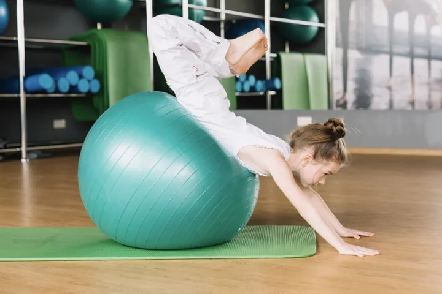

Bill-Physio Physiotherapie in Bad Kreuznach
Wir hören zu, wir verstehen, wir behandeln. Ihre Gesundheit verdient Zeit und Aufmerksamkeit. Das Team von Bill Physio nimmt sich Zeit. Für Sie und für Ihre Gesundheit. Individuelle Physiotherapie mit fachlicher Präzision und echter Menschlichkeit.
Erlebnis startenWer sind wir?
Wir sind eine Praxis für den Bereich Physiotherapie.
In unserer Praxis hat Ihre Gesundheit und Wohlbefinden höchste Priorität.
Unsere Therapiekonzepte sind darauf ausgerichtet, Ihnen zu helfen, die Leistungsfähigkeit zu erhalten oder zu verbessern. Gemeinsam mit Ihnen entwickeln wir eine Strategie, Ihre Mobilität zu erhalten / wiederherzustellen, Einschränkungen zu verändern oder damit umzugehen.
Sich wohlfühlen ist ein Stück Lebensqualität!
Wir freuen uns sehr auf Sie!
— Bill Physio Team
Was wir Ihnen anbieten können ?
Entdecken Sie unsere vielfältigen Therapieangebote und finden Sie den passenden Ansatz für Ihre Bedürfnisse.

Krankengymnastik
Behandlungsmethode, die darauf abzielt, Beweglichkeit, Kraft, Koordination und Ausdauer zu verbessern. Durch individuell angepasste Übungen werden Schmerzen reduziert, die Funktion des Bewegungsapparates gefördert und der Heilungsprozess nach Verletzungen, Operation oder Erkrankungen unterstützt.
Atemgymnastik
Die Atemgymnastik ist eine physiotherapeutische Behandlungsmethode zur Verbesserung der Atemfunktion und zur Förderung einer bewussten, effizienten Atmung. Durch gezielte Atemübungen wird die Lungenbelüftung verbessert, die Atemmuskulatur gestärkt und das allgemeine Wohlbefinden unterstützt.

Manuelle Lymphdrainage
Die Manuelle Lymphdrainage ist eine spezielle physiotherapeutische Behandlung zur Anregung des Lymphflusses und zur Reduzierung von Schwellungen (Ödemen). Durch sanfte, rhythmische Grifftechniken wird der Abtransport von Gewebsflüssigkeit gefördert und das Lymphsystem unterstützt.

Kompressionsbandagierung
Die Kompressionsbandagierung ist eine therapeutische Maßnahme zur Unterstützung des venösen und lymphatischen Rückflusses. Durch das Anlegen spezieller Bandagen wird der Druck im Gewebe reguliert, wodurch Schwellungen reduziert und der Heilungsprozess gefördert werden können.

Schlingentisch (Traktionsbehandlung)
Die Schlingentischbehandlung ist eine physiotherapeutische Methode, bei der der Körper oder einzelne Körperteile durch Schlingen teilweise entlastet werden. Dadurch können schmerzhafte Bewegungen erleichtert, Gelenke mobilisiert und die Muskulatur gezielt gekräftigt oder gedehnt werden.

Eisbehandlung (Kaltetherapie)
Die Kältetherapie ist eine physikalische Behandlungsmethode, bei der gezielt Kälte auf den Körper angewendet wird. Sie dient der Schmerzlinderung, der Reduktion von Schwellungen und Entzündungen sowie der Förderung der Heilung nach Verletzungen oder Überlastungen.

Massage
Die Massagetherapie ist eine manuelle Behandlungsmethode, bei der durch gezielte Grifftechniken Muskulatur, Bindegewebe und Durchblutung beeinflusst werden. Sie dient der Lockerung verspannter Muskeln, der Schmerzlinderung und der Förderung von Entspannung und allgemeinem Wohlbefinden.
KG-ZNS-Bobath
Die Bobath-Therapie ist eine physiotherapeutische Behandlungsmethode für Menschen mit zentralen neurologischen Erkrankungen, insbesondere nach Schlaganfall oder bei zerebralen Bewegungsstörungen. Sie zielt darauf ab, Bewegungsabläufe zu normalisieren, die Motorik zu fördern und Alltagsfunktionen durch gezielte Übungen und Haltungsschulung zu verbessern.

Kinesio-Taping
Das Kinesio-Taping ist eine Therapieform, bei der elastische Tapes auf die Haut aufgebracht werden, um Muskeln, Gelenke und das Lymphsystem zu unterstützen. Es dient der Schmerzlinderung, Stabilisierung von Bewegungsabläufen, Förderung der Durchblutung und Unterstützung der Heilung.
Heiße Rolle
Die Heißrolle ist ein physiotherapeutisches Hilfsmittel, das Wärme gezielt auf Muskeln und Gelenke überträgt. Sie dient der Lockerung verspannter Muskulatur, der Förderung der Durchblutung und der Schmerzlinderung.

Elektrotherapie
Die Elektrotherapie ist eine physiotherapeutische Methode, bei der elektrische Ströme gezielt auf Muskeln und Nerven angewendet werden. Sie dient der Schmerzlinderung, der Muskelstimulation, der Durchblutungsförderung und der Unterstützung von Heilungsprozessen.
Behandlung mit Rotlichtlampe
Die Behandlung mit der Rotlichtlampe ist eine physikalische Therapie, bei der gezielte Wärme durch Infrarotstrahlung auf Haut und Gewebe übertragen wird. Sie fördert die Durchblutung, entspannt verspannte Muskeln und unterstützt die Linderung von Schmerzen.

Hausbesuche
Die Behandlung im Rahmen von Hausbesuchen ist eine physiotherapeutische Versorgung direkt zu Hause beim Patienten. Sie ermöglicht individuelle Therapie, Bewegungsübungen und Betreuung vor Ort, insbesondere für Patienten mit eingeschränkter Mobilität oder akuten Einschränkungen.

Behandlung von Kindern und Jugendlichen
Die Behandlung von Kindern und Jugendlichen ab 6 Jahren ist eine altersgerechte physiotherapeutische Versorgung, die Beweglichkeit, Kraft und Koordination gezielt fördert. Sie berücksichtigt spielerische Elemente und individuelle Bedürfnisse, um die Gesundheit, motorische Entwicklung und funktionelle Fähigkeiten nachhaltig zu unterstützen.
Termin vereinbaren
Rufen Sie uns an, um einen Termin zu vereinbaren oder Fragen zu unserer Praxis zu klären.
Für allgemeine organisatorische Fragen: kontakt@bill-physio.de
Bitte senden Sie keine Befunde, Diagnosen oder andere Gesundheitsdaten per unverschlüsselter E-Mail. Medizinische Einzelheiten besprechen wir persönlich oder telefonisch.
Ein Termin ist erst nach unserer Bestätigung vereinbart. Hinweise zur Verarbeitung Ihrer Daten finden Sie in unserer Datenschutzerklärung.
Bill-Physio · Traubenstraße 16 · 55545 Bad KreuznachImpressum
Angaben gemäß § 5 DDG
Bill Physio, Praxis für Physiotherapie Bidias Thina Bill Hyacinthe
Traubenstraße 16
55545 Bad Kreuznach
Kontakt:
Tel. 0671 97029941 / Fax: 067197028459
E-Mail: kontakt@bill-physio.de
Berufsbezeichnung: Physiotherapeut
Berufsrechtliche Regelung: Masseur- und Physiotherapeutengesetz (MPhG)
Verliehen in: Deutschland
Bewerbung
Werden Sie Teil unseres engagierten Teams und gestalten Sie die Zukunft der Physiotherapie mit uns!
Wir suchen stets nach motivierten und qualifizierten Fachkräften, die unsere Leidenschaft für Gesundheit und Wohlbefinden teilen.
Wenn Sie Interesse an einer Mitarbeit in unserer Praxis haben, freuen wir uns auf Ihre Bewerbung. Bitte senden Sie Ihre vollständigen Bewerbungsunterlagen per E-Mail an:
E-Mail: kontakt@bill-physio.de